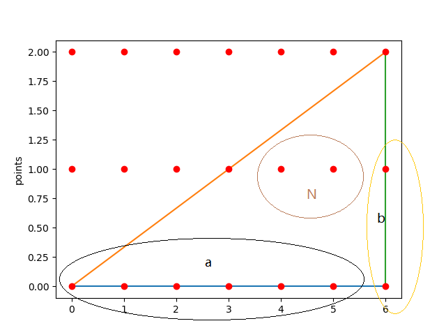

(d)
证明:看下面一张图,

可得, $长方形内(包括边界)点数的和 = (a+1)(b+1) \tag{0}$ 而
$$长方形内(包括边界)点数的和 = 2N + 2B - 斜对角线上的点 \tag{1}$$
把(0)带入(1)可得
$$(a+1)(b+1) = 2N + 2B - 斜对角线上的点 \tag{2}$$
而
$$
斜对角线上的点 = B - a -b + 1 \tag{3}
$$
把(3)带入(2)可得
$$
\begin {split}
(a+1)(b+1) &= 2N + 2B - 斜对角线上的点 \\
ab + a + b + 1 &= 2N + 2B - (B - a -b + 1) \\
ab + a + b + 1 &= 2N + 2B - B + a + b - 1 \\
ab + a + b + 1 &= 2N + B + a + b - 1 \\
ab + 1 &= 2N + B - 1 \\
ab &= 2N + B - 2 \\
ab/2 &= N + \dfrac{1}{2}B - 1 \\
A &= N + \dfrac{1}{2}B - 1 \\
A - N - \dfrac{1}{2}B &= - 1
\end {split}
$$
命题得证